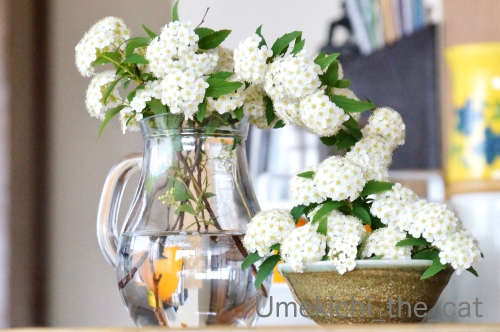
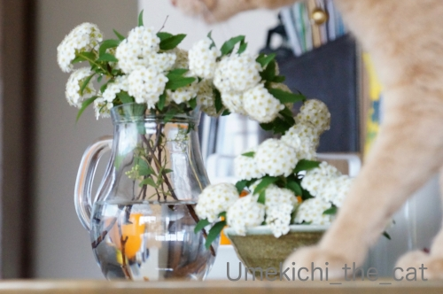
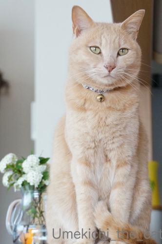
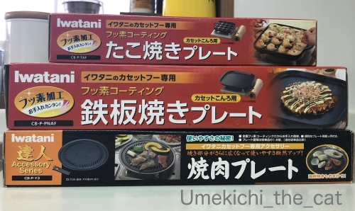
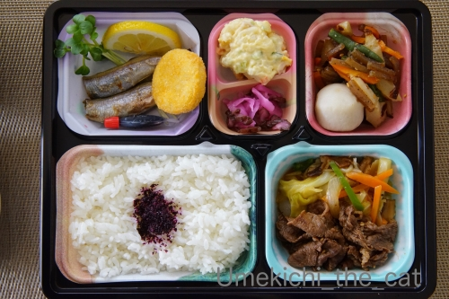
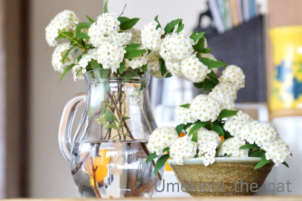
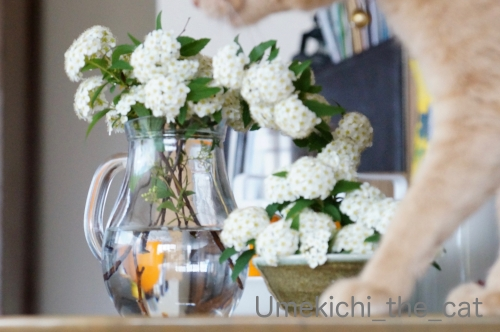
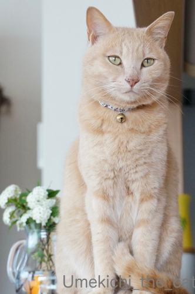
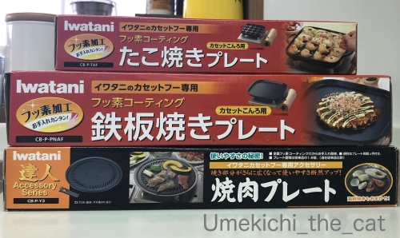
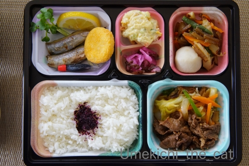

必ず写り込む [梅吉]
鉢植えのコデマリが頭でっかちになったので（おっとが）小さく仕立て直し。
花はまだ盛りだったので家に飾ってみました＾＾

結構なボリュームだったので花瓶と花器の二つに分けて。

カフェオレ色のは飾った覚えはありませんが・・・・・？

毛深い人、映り込みすぎw

はいはい。主役はあにゃたですものね＾＾
＊＊＊＊＊＊＊＊＊＊＊＊＊＊＊＊＊＊＊＊＊＊＊＊＊＊＊＊＊＊＊＊＊＊＊＊＊＊
在宅時間が増えてあれこれ作りたくなるのか各種粉類が売り切れているらしい。
どうやら我が家もその流れに乗っていた様で週末はたこ焼き(〃▽〃)
関西人、エセですけど、なのでたこ焼きプレートはもちろん持ってますよ！
で、我が家がたこ焼きするときに使っているのがこれ。

また毛深い何かが写り込んでますが(^-^;
卓上カセットコンロで使えるたこ焼きプレートです。
ホットプレートのもあるのですが・・・・
あれって重いし大きくて洗いにくいし出すが億劫じゃないですか？
（最近のホットプレートは二人用とかコンパクトなのもありますけど。）
このイワタニのプレートはコンパクトで軽くて扱いがとっても楽チン。
カセットコンロはイワタニ純正のじゃなくても大丈夫ですよ。

あまりにも扱いが楽なので我が家はこのシリーズ３種類も買っちゃいました＾＾
ホットプレートは全然使わなくなったので現在断捨離対象品になってます。
もう一つ別話題。
先日のランチ、お弁当を買ってみました。


近所の会席料理屋さんが持ち帰り弁当を始めたので早速利用。
こんな機会でもなければ口にすることもなかったお料理。
これはこれで嬉しい出来事でした＾＾
ちなみにメインのお魚はそれぞれ「なまり節」と「ししゃも」です。
なまり節皆様ご存知ですか？？？
なまり節とは簡単にいうとカツオを三枚におろして一度燻製にしたものだそう。
カツオに馴染みのある地域にお住まいの方は当然ご存知なのかしら。
私は今回生まれて初めて口にしました。
このなまり節、大阪のスーパーでは「とんぼ」と表示されて売ってます。
一体どうやって食べるんだろう・・・と思うこと８年目。
ようやく食べる機会に恵まれたのでした( ´艸｀)
お弁当のなまり節は別付けのお出汁をたっぷりかけていただくスタイル。
美味しかった！！・・・・けどちょっと「猫缶」でした（爆）
お出汁の香りの方が強かったのか梅吉の反応が薄くて助かりましたw
メニューは日替わりとのことなのでまた買いに行きまーす(^_－)☆
 ↑ガブッと一押し↑
↑ガブッと一押し↑
花はまだ盛りだったので家に飾ってみました＾＾

結構なボリュームだったので花瓶と花器の二つに分けて。

カフェオレ色のは飾った覚えはありませんが・・・・・？
毛深い人、映り込みすぎw

はいはい。主役はあにゃたですものね＾＾
＊＊＊＊＊＊＊＊＊＊＊＊＊＊＊＊＊＊＊＊＊＊＊＊＊＊＊＊＊＊＊＊＊＊＊＊＊＊
在宅時間が増えてあれこれ作りたくなるのか各種粉類が売り切れているらしい。
どうやら我が家もその流れに乗っていた様で週末はたこ焼き(〃▽〃)
関西人、エセですけど、なのでたこ焼きプレートはもちろん持ってますよ！
で、我が家がたこ焼きするときに使っているのがこれ。
また毛深い何かが写り込んでますが(^-^;
卓上カセットコンロで使えるたこ焼きプレートです。
ホットプレートのもあるのですが・・・・
あれって重いし大きくて洗いにくいし出すが億劫じゃないですか？
（最近のホットプレートは二人用とかコンパクトなのもありますけど。）
このイワタニのプレートはコンパクトで軽くて扱いがとっても楽チン。
カセットコンロはイワタニ純正のじゃなくても大丈夫ですよ。

あまりにも扱いが楽なので我が家はこのシリーズ３種類も買っちゃいました＾＾
ホットプレートは全然使わなくなったので現在断捨離対象品になってます。
もう一つ別話題。
先日のランチ、お弁当を買ってみました。

近所の会席料理屋さんが持ち帰り弁当を始めたので早速利用。
こんな機会でもなければ口にすることもなかったお料理。
これはこれで嬉しい出来事でした＾＾
ちなみにメインのお魚はそれぞれ「なまり節」と「ししゃも」です。
なまり節皆様ご存知ですか？？？
なまり節とは簡単にいうとカツオを三枚におろして一度燻製にしたものだそう。
カツオに馴染みのある地域にお住まいの方は当然ご存知なのかしら。
私は今回生まれて初めて口にしました。
このなまり節、大阪のスーパーでは「とんぼ」と表示されて売ってます。
一体どうやって食べるんだろう・・・と思うこと８年目。
ようやく食べる機会に恵まれたのでした( ´艸｀)
お弁当のなまり節は別付けのお出汁をたっぷりかけていただくスタイル。
美味しかった！！・・・・けどちょっと「猫缶」でした（爆）
お出汁の香りの方が強かったのか梅吉の反応が薄くて助かりましたw
メニューは日替わりとのことなのでまた買いに行きまーす(^_－)☆

カフェオレ色の梅吉

梅吉 2023年8月10日 永眠


梅吉と出会った譲渡会

犬猫の理由なき殺処分ゼロ
妄想広告
UMEKICHI 光

爆発的に早い！
時々攻撃的！
Thanks to Mr.Boss365
爆発的に早い！
時々攻撃的！
Thanks to Mr.Boss365

写してほしいんですよねぇ～>^_^<
今週
うちもたこ焼きが予定されています(^^♪
by らしゅえいむ (2020-04-23 00:52)
カフェオレ色で毛深い人は目立ちたがり屋さんだニャ（ﾟ□ﾟ）
たこやき機器は、最近は関東でも売ってるけど私は要らないな？
買ったとしても１回使ってお蔵入りになりそうだしねw
by 英ちゃん (2020-04-23 00:53)
うちの近所でも出前を始めたりしたお店があります。
どこも大変だと思うけどささやかな応援として時々頼んでいます。
by zombiekong (2020-04-23 01:54)
なまり節は知ってましたが口にしませんでした。
ニャンが喜ぶ魚臭い物は苦手で＾＾；
by ぽちの輔 (2020-04-23 06:45)
梅吉さんモデルかわいいにゃあ^^
by ニコニコファイト (2020-04-23 07:19)
うちのカセットコンロはイワタニ製だｗ(^^
問うことは「このたこ焼きプレートを買ったらいいのですね♪
電気式のたこ焼きプレートを持っていましたが誰かにあげました。
やはりガスで焼く方が早いし美味しいですよね。
自分ではうまく作れる自信がないのですが・・・
3食毎日作るとかなりのストレスですからこのようなお弁当も取り入れて
楽しい食卓になる工夫は必要だと思いました。
梅吉さんも主演の座を奪われないように努力を惜しまない。
なまり節、売っているのを見たことありますが調理法を知らなくていまだに食べたことないです。
by marimo (2020-04-23 08:22)
こでまりそう、好きです。盆栽になるとまた違う雰囲気でいいですね。
なまり節はしょうがを効かせて醤油で煮ます～
by liang (2020-04-23 09:14)
関西では必須のたこ焼きプレートですね！
各家に必ずワンセットはある物ですね。
by ma2ma2 (2020-04-23 10:40)
梅吉さん、どこにでも登場。さすがですー。
タコ焼き、良いなぁ。そうそう、いろいろ売り切れてるんですよ。クリームチーズの売切れには参りました。でも、無塩バターが特売になってて買っちゃったから、焼き菓子の方を頑張らねば。しかし、作った分は、全部自分のお腹に入るわけで‥‥ヤバい。
お弁当、良いですねー。近所にも割烹のお店とかあるから始めてないかなぁ。のぞいてこよう‥‥と言っても、金縮生活中なので、無理かなー。それでも、昨日はなんだか疲れてしまって、お昼は近くのパン屋さんでピザ買ってきちゃった。障がい者支援でやっているお店だから協力したいってのもあったしね。
なまり節は、言葉としては知ってました。焼津(静岡市のお隣でカツオ漁が有名)に、父方の祖母の親戚がいて、子供のころは、カツオ一尾とかお土産で盛ってきてくれたりしたくらい、カツオにはなじみのある土地ですからね。でも、鰹節の親戚くらいにしか思ってなかった(笑)
by ChatBleu (2020-04-23 11:10)
カフェオレ色が写り込む（笑
主役は梅吉さんですもんね(#^.^#)
粉物はスーパーで売り切れ続出です！
たこ焼き食べたくなりましたが
自分で作ると大量になるので
冷凍たこ焼きで我慢してます(;^_^A
by きぃ (2020-04-23 11:43)
花より梅吉♪
そんなに頑張らなくてもみんなわかってますよ～(#^^#)
ちぃさんの関心が自分じゃなくてお花に向いてるのが許せないのかも？！
かわいいにゃ～ん^^
カセットコンロで使えるたこ焼きプレート、欲しい！
実は大阪人なのに今家にタコ焼き器がないんですよ！！
まあ・・スグ近所に4軒もたこ焼き屋さんがあるのでね～^^;
ちょっとずつイロイロのお弁当、美味しそうです。
「とんぼ」は聞いた事はありますが、たぶん母が好きじゃなかったんだと思いますが食卓に登場したことがなく、私も自分で買ったことがないです。「猫缶」なるほど！！
ニャンコのごはんは塩味付けたら食べられそうなの多いですもんね♪
by ゆきち (2020-04-23 12:19)
なまり節、私は関西人だけど、東京に住み始めてから知りました。
昔池袋にいた友人ちの猫が、なまり節が好物で、毎日あげてたなって。
カセットコンロ用のプレート、色々あるんですね。
by nachic (2020-04-23 13:10)
毛深い人は必ず写り込みたがりますよねｗ
そして毛深い人が写り込まないと、撮影する人は、毛深い人を探すのです(笑)
最近たこ焼き食べてないよねーって
昨日まさに家で話をしていたの。
そのうちたこ焼き作ろうか！って言っていたんだけど
そうか！粉が売れてるのか（＠＠
それは盲点だったｗｗ
会席料理屋さんのお弁当とっても美味しそう！！
なまり節、こっちにきて食べたけど
お店で数える程度しか食べてないかな。
大阪ではとんぼって言うんだね。
by リュカ (2020-04-23 16:05)
こんにちは！
写真に写るのが嬉しいですよね（"＾ω＾）・・・
う～ん、たしかに毛深い。
by Take-Zee (2020-04-23 16:28)
お母さんがカメラ構えたら、梅吉さんの出番ですもんねぇ=(^.^)=
メインの自分が写らないとお母さんが寂しがっちゃうしw
たこ焼きプレート、うちのプレートはホットプレートタイプで
そろそろ端っこがヤバく（焦げるw）なってきてるんですよねぇ(*_*)
買い換えようと思ってましたが、イワタニのたこ焼きプレートこれはアリですねぇ( ^ω^ )
今度の休みにホームセンターに行ってみようっと＾＾
by ニッキー (2020-04-23 18:05)
梅吉さん、カメラがあると反応してしまうんですでしょうか・・・。
こちらではたこ焼きを作る習慣がないのですが、好きなので昨日も買って食べてしまいました。
これからは外食などは自粛なので、我が家では休みは庭でこじんまりとこぢんまりとバーベキューでもやろうかと話してますが、炭が10年前に買った物なので着火するか不安です(^_^;)
by kou (2020-04-23 18:20)
こんにちは。
梅吉君、やけに白い感じ？洗濯したのですか？
たこ焼き機は、欲しいな〜と思いながら・・・
数回使って終わりそうなので購入していません（爆）「プレート」の考え方良いかもです。
「会席料理屋さんが持ち帰り弁当」美味しそうです。素材重視みたいですね。
「なまり節」は食べた事ないですが、白ごはんには合いそうです。
日替わりは楽しみですが、お値段が気になります！？(=^･ｪ･^=)
by Boss365 (2020-04-23 19:00)
カセットコンロに乗せるだけの鉄板なんですね！
これだと、後始末もじゃぶじゃぶ洗えて楽そう～。
ちなみに我が家はブルーノというホットプレートですわ。
なまり節、恥ずかしながら知りませんでした～。。。
by よーちゃん (2020-04-23 20:04)
両親が高知の人なので、かつおはよく食べていたと思います。
カツオのなまり、と言ってました。
子供の私には、出汁とった後のスカスカ、みたいな感じで
好んで食べる味ではなかったなぁ^^;
by も〜 (2020-04-23 20:43)
何かを撮影しようと準備していると、「何やってるの？」って近寄ってきますよね。^^)
すごい！3種類のプレートをお持ちなのですね！
これであと、ジンギスカン用のプレート（鍋？）があれば最強ですね。^^;
by yes_hama (2020-04-23 21:46)
いやいや、今はキミを撮ってるわけじゃないからって時に
必ず入ってきますよね(>_<)しかも絶妙のタイミングでｗ
なまり節って名前しか知らなかったけど、「猫缶」でなん
となくにおいの想像がつきました。
by mio (2020-04-23 21:59)
親父の出身が三重なんですが カツオの水揚げが多い港で
生節は子供の頃がよく食べました
そう言えばしばらく食べてないなぁ
by (。・_・。)２ｋ (2020-04-23 22:09)
「はいはい、花瓶も前でポージングすればいいのね」
と梅吉さんは思ってるのかも♪
なんてったってそのカメラは梅吉さん専用ですからね。
からのモデル料よこせまでがワンセット(笑)
鉄板プレートが３枚あるとたこ焼きとお好み焼きと焼きそばがいっきに出来るじゃないですか！
でもやっぱり米が欲しいので焼きそば→そばめしでもＯＫです(^^♪
お弁当は大和川河川敷に持っていきたい～
by yamatonosuke (2020-04-24 01:10)
梅吉君、ごくごく自然に写真に入ってくる様子が想像できます
カメラ目線もばっちりですね！
なまり節、実家の母は出汁を聞かせて炊き合わせにしてました
結婚後に買おうかなと思ったら旦那さんが「食べたことない」
こういう食べ物だよと説明したら「いらない」と言ったので
もう長い事たべてないなぁ
姑に聞いてみたら「なにそれ、食べた事ないわ」
親が作らなきゃそりゃ食べたことがないわなぁ
by 藤並 香衣 (2020-04-25 00:21)
コデマリ、豪華盛りですね＾＾。 白い花でシンプルなところもかっこよく。
カフェオレ色の梅吉さん、たこ焼きプレートでも登場ですね。
我が家もたこ焼きプレート、持って来ればよかった、と後悔。
置いてきた荷物のどこかに埋もれてるはず・・・。
なまり節、見たことはあるような、でも食べたかどうか覚えがなく・・・なまり節とは知らずに食べてるかも＾＾；。生魚に飢えてる今は、カツオのたたきが食べたいなぁ。
お弁当、なんて美味しそうなものばかり。 日替わり、全部制覇したくなります。
by Inatimy (2020-04-25 06:32)
こでまりのブーケ♡ 可愛いんだけど〜
あっと言う間に、カフェオレ梅に隠されてしまいましたね(^0^;)
出し汁で煮たなまり節＝猫缶説に、めちゃ同感(^_^)b
by のらん (2020-04-25 11:59)
梅吉さん、写り込みたいのにゃ～^^
撮りたいんじゃないの？違うの…？という微妙な表情^^;
たこ焼きは食べる習慣がなくて、たまに食べると「へぇ～こういうものなのね」って感じです。
ホットプレートは美味しくできるので捨てられないけど、めったに出さない！^^;
なまり節、とんぼっていうんですか～なんでやろ？
うちでは母がたまに作ったけど、あまりおいしいと思えなかった…で、猫にあげてました、そういえば^^
by sana (2020-04-25 15:04)
近所の公園にコデマリがいっぱい咲いてます。
きれいですね。
カセットコンロにのせるたこ焼きプレートいいですね。
いちいち専用機とか買うより使い勝手がよいですね。
by ふにゃいの (2020-04-26 11:59)
「そら綺麗な花があったらワシが背負わなアカンやろ〜ワシの出番やーん！」と仰ったかどうか…
昨日、まさにちぃさんと同じ事を思いました！
粉もん売り場の棚がスッカラカン！たこ焼き、お好み焼き、ホットケーキミックス…なーんにもありませんw
その他も棚の空いてる事数知れず…品物が追い付かないのか品出しの人手不足なのか…棚も三密を避けてる！wくらいに品物がなかった〜
しかも野菜のお高い事…(＞＜)
おうち時間が増えて食費も光熱費もカロリーも上がりっぱなしです…
ホットプレートが断捨離対象とな！？
by くつしたにゃん (2020-04-26 13:14)
写真が一枚も見れないのは・・・私だけ！？
by 50oyaji (2020-04-26 20:25)
梅吉さん久々に見ることが出来ました良かったです(^^♪
by 50oyaji (2020-04-26 21:18)
毛深い人www
ちょっとツボってしまいました(*￣ｍ￣)ノ彡＿☆
コデマリ、かわいいですよね♪
大好きなお花ですが、庭のはパパ上が大胆にカットして
くれたため、みすぼらしくなってしまいました"(/へ＼*)"))
大阪人なら必ず持っていると噂のたこ焼きプレートですねw
一昨年ぐらいに買ったのですが、１回しか使っていません(爆w)
なまり節も食べなければ、とんぼも初耳です。どういう意味だろ？
by カトリーヌ (2020-04-26 22:43)